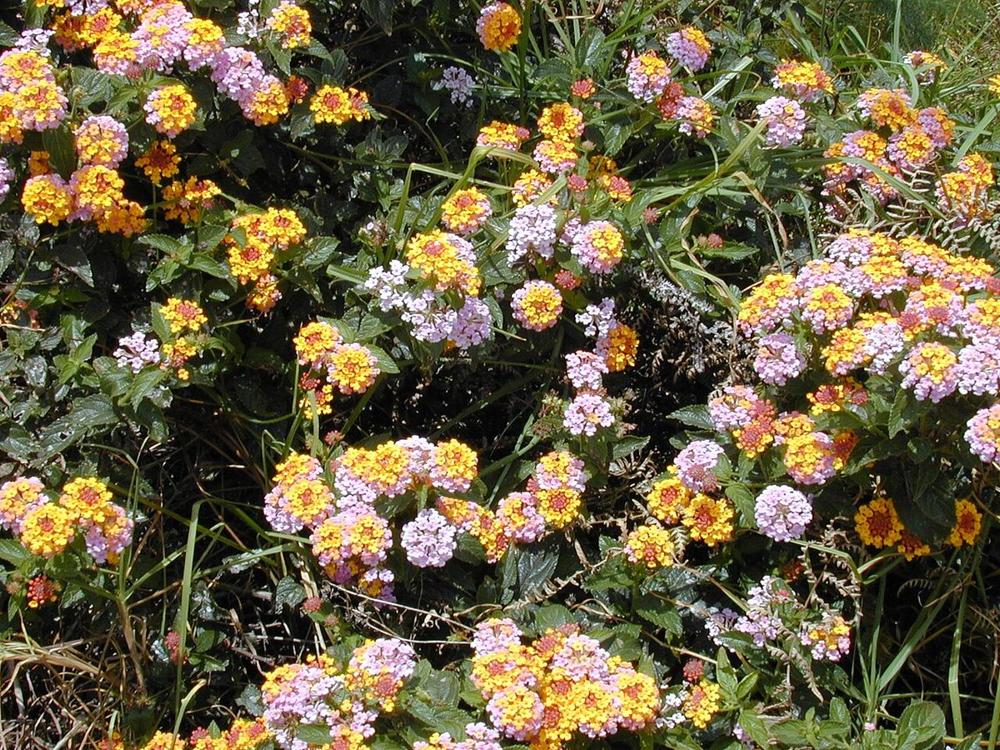
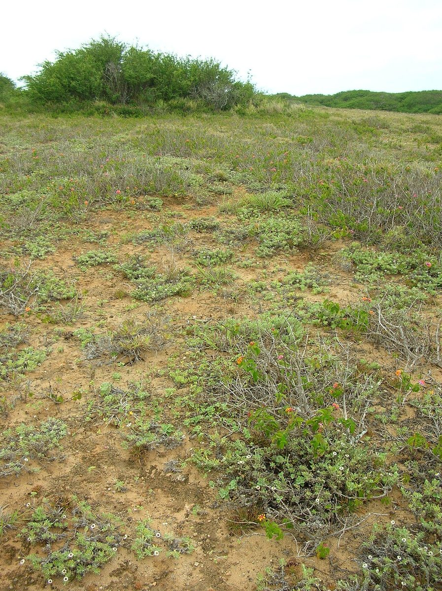

RARE & EXOTIC Sea cliff Valley mouth
Lantana camara
lākana · lantana, common lantana, wild sage


Quick facts
| Family | Verbenaceae |
|---|---|
| Scientific name | Lantana camara |
| Hawaiian name(s) | lākana |
| English name(s) | lantana, common lantana, wild sage |
| Status | Invasive |
| Conservation | Hawaii state noxious weed; global top-100 invasive (IUCN ISSG) |
| Coastal zones | Sea cliff Valley mouth |
| Occurrence | Widespread on dry stretches of the Nā Pali–Kona coast and lower slopes of the drier Nā Pali valleys; forms thorny thickets on disturbed soil. |
Hazards: Green (unripe) berries and foliage are toxic to livestock, dogs, and humans. Prickly stems tear clothing and skin. Handle only with gloves.
How to identify
- Growth form
- Arching, often thorny shrub, 1–3 m tall, forming dense many-branched tangles. Stems square in cross-section, with recurved prickles.
- Size
- 1–3 m tall, forming thickets several metres across.
- Leaves
- Ovate, opposite, 3–8 cm long, dull green with a rough (sandpapery) upper surface and prominent venation. Margins finely toothed. Strongly aromatic when crushed (unpleasant to most people).
- Flowers
- Tiny (~4 mm) tubular flowers packed into flat-topped rounded heads 2–3 cm across. Flowers change colour as they age within the head, so a single head often shows yellow centre, orange middle, and pink or red outer flowers simultaneously — this multicoloured head is the single most diagnostic feature.
- Fruit / seed
- Small round drupe, ~5 mm, green ripening blue-black; borne in clusters.
- Bark / stem
- Square-sectioned stems with recurved prickles; grey-brown bark.
- Where it sits on the coast
- Dry, disturbed slopes and old track edges on the leeward coastal strip; also spreads into valley mouths after fire or grazing history.
Clinchers (features that lock the ID)
- Multi-coloured flat-topped flower heads — yellow to orange to pink in the same head.
- Square stem with backward-curving prickles.
- Strongly aromatic (unpleasant) crushed leaf odour.
- Blue-black berry clusters when in fruit.
Look-alikes
- Lantana montevidensis (trailing lantana) — Also naturalized in Hawaiʻi, but low sprawling, purple/pink flowers only (never multicoloured), no prickles.
- Verbena species — Verbenas have narrower spikes of same-coloured flowers, not the colour-changing flat-topped heads of Lantana camara.
Ecology
Native to the American tropics; introduced worldwide as an ornamental and now one of the world's most damaging invasive shrubs. In Hawaiʻi it dominates dry disturbed land, poisoning livestock, providing dense fuel for wildfires, and displacing native shrubs. Bird-dispersed seeds carry it into remote coastal slopes. [1], [2], [13], [14]
Cultural significance
—